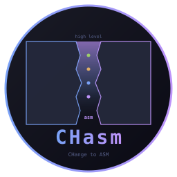
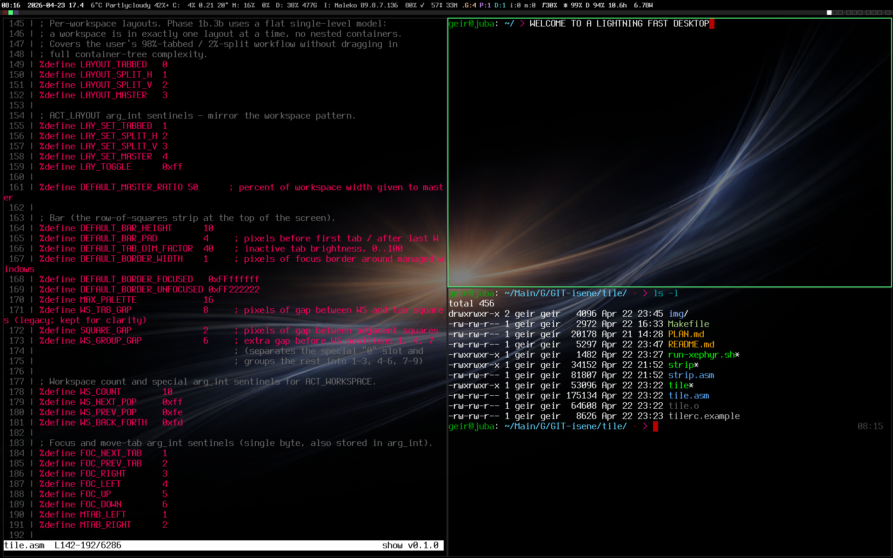

CHasm
A small Linux desktop suite written entirely in x86_64 assembly. No libc. No toolkit. No dynamic linking. Zero runtime.

A small Linux desktop suite written entirely in x86_64 assembly. No libc. No toolkit. No dynamic linking. Zero runtime.

Every binary on screen is x86_64 assembly. tile holds the layout. strip drives the status row, fed by the asmites in chasm-bits. glass renders each pane (pseudo-transparency picks up the wallpaper). bare is the shell behind every prompt. show renders the syntax-highlighted source.
Modern stacks are deep. A normal terminal loads 30+ shared libraries before drawing a single character. A shell pulls in Python, GLib, OpenSSL transitively. A window manager depends on a toolkit that depends on a compositor that depends on... CHasm strips all of that away to find out what you actually need.
The answer turns out to be: very little. The Linux kernel gives you syscalls. X11 is a documented Unix-socket wire protocol. Everything else is a choice. CHasm is the choice to write that everything else, by hand, in the smallest reasonable language.
Direct syscall for kernel work, the X11 wire
protocol over a Unix socket for graphics. No dynamic
linker, no malloc, no glibc, no Xlib, no GTK, no Qt.
BSS-allocated buffers and that's it.
Each tool is one self-contained binary, typically 20-150 KB. The whole desktop fits in under 500 KB of executable code. Nothing to update, nothing to break, no dependency graph to audit.
bare comes up in roughly 9 microseconds. No interpreter, no runtime initialisation, no library loading. The kernel hands control straight to your entry point.
Polling, waking, and forking on a timer are suspect. Status segments use blocking reads on the right file/socket; X11 work compares target state to last- applied state before issuing requests. CPU goes back to sleep, fast.
Seven asm binaries that together form a complete X session, plus four Rust TUI configurators (the only non-asm parts of the suite — writing a configurator in pure asm would defeat the whole point).

Interactive shell with line editing, history, completion, nicks, multi-pipes, redirects, here-strings, abbreviations, undo, and smart hotkeys. ~9 µs startup.

X11 wire protocol direct, kitty graphics, color emoji via XRender, pseudo-transparency, configurable fonts and keys. No toolkit, no Xlib, just the wire.

Tiling window manager: 10 workspaces, per-workspace tabs, row-of-squares bar, smart cycling, stash. Bundles strip — the X11 status bar that hosts the asmites.

File viewer with syntax highlighting, ESC sanitisation,
cat / pane / pipe modes. Drop-in replacement for
less when reading source.
Tiny status-bar segment programs fed into strip: clock, cpu, mem, disk, battery, brightness, network, mailbox, moonphase, wintitle, and more. Each one a self-contained binary.

TrueType / OpenType rasterizer: TTF parser, quadratic Bezier flatten, scanline NZW with 4×4 supersample AA, composite glyphs, UTF-8, variable fonts (fvar + gvar + IUP).

Fullscreen override-redirect locker with keyboard +
pointer grab and a baked raw-RGB lock-screen image.
A small suid-root C helper handles
crypt() / shadow auth.

TUI configuration tool for the bare shell. Browse and modify all settings with live previews. Atomic save: tmp → bak → publish.

Edit glass's bg / fg / cursor as 24-bit hex, step font size through nine presets, adjust opacity and cursor blink, manage the bg-cycle palette. Six built-in themes.

Configure tile's bar height, padding, workspace and tab colors, border widths, layout ratios. Live preview shows what the bar will look like as you tweak.

Reorder, toggle, and edit strip's asmite-driven status segments without ever opening the rc file. Live colour swatches, per-segment refresh interval, comment-preserving save.
Each tool is one .asm file (or a small set), assembled with
NASM and linked with ld. No autotools, no Make targets to
memorise, no ./configure.
git clone https://github.com/isene/bare && cd bare nasm -f elf64 bare.asm -o bare.o && ld bare.o -o bare install -m 755 bare ~/bin/
Same recipe for glass, tile,
show, glyph,
bolt. Each repo has a one-line build
command at the top of its README. chasm-bits
ships a Makefile because it builds many small
binaries at once.